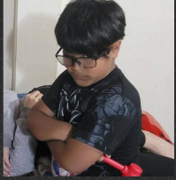

<mat-toolbar>
    <button mat-icon-button (click) = "goBack()" class="example-icon" aria-label="Example icon-button with menu icon" *ngIf="!isDashboard">
      <mat-icon>keyboard_backspace</mat-icon>
    </button>
     
    <button mat-button><span style="font-size: medium;" routerLink="/dashboard">Sistema de Practicas Profesionales</span></button>
    <button mat-button *ngIf="roleSelected == 'Coordinator'" routerLink="/catalogos" style="margin-left: 25px;">Catálogos</button>
    <button mat-button *ngIf="roleSelected == 'Coordinator'" routerLink="/archivos" style="margin-left: 10px;">Archivos</button>
    <span class="example-spacer"></span>
    <button mat-raised-button *ngIf="user != null">{{(roleSelected == "Student") ? 'Estudiante' : 'Coordinador'}}</button>
    <button mat-button *ngIf="user != null" routerLink="/perfil">{{user.userFirstName + ' ' + user.userLastName}}</button>
    
    <button mat-button *ngIf="user != null" (click) = "logOut()"><mat-icon>exit_to_app</mat-icon></button>
</mat-toolbar>